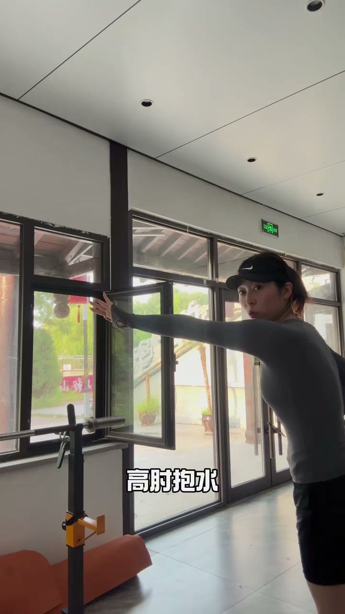
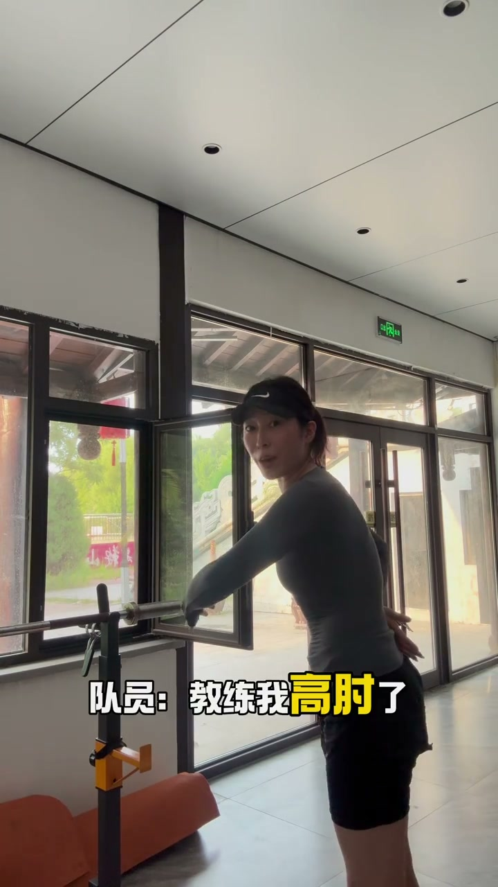
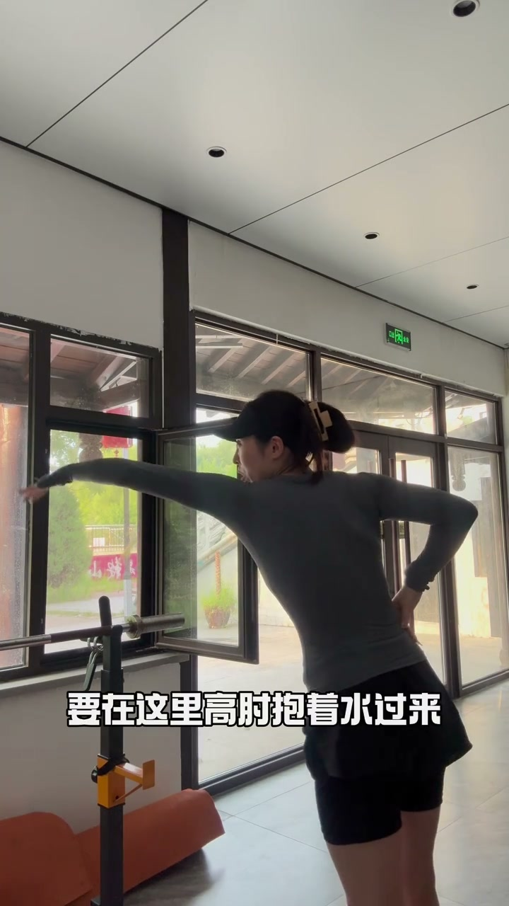

内容要点
视频虽然只有 22 秒，但用对比演示传递了一个关键认知：高肘抱水的本质是"抱到水"，而非"做出高肘形状"。
知识结构
学员从身体侧面开始抱水，教练指出"而不是在这儿"——抱水起始位置太靠后，手已经过了有效抓水区。
学员说"教练我高肘了，我也是抱水"，但教练指出"这里也太晚了"——虽然有高肘的外形，却没有在正确时机抓到水。
从头前开始，高肘抱着水一路移动到身后。教练强调"是高了，但抱水没了，那只是做了高肘的动作"——关键在于水的阻力感必须贯穿整个划水路径。
高肘抱水的考核标准不是肘关节角度大小，而是手掌和前臂是否在整个划水行程中持续感受到水的阻力。只有手臂形状没有水感，等于白划。
图文实录
第一阶段：暴露错误 — 抱水起点太晚
视频一开场，教练直接演示高肘抱水的正确理解："高肘抱水，从头前开始抱水，而不是在这儿"。说话的同时，教练用手臂位置对比了两个关键节点——在头部前方开始向下抓水是有效的，但从身体侧面才开始抱水已经错过了最佳发力点。
这里的画面是教练在水中的侧身视角，手臂从伸直状态过渡到高肘弯曲的过程清晰可见。

第二阶段：学员的典型误解 — "我高肘了"不等于抱到水
学员模仿后说"教练我高肘了，我也是抱水"，认为自己已经做对了。教练立刻指出问题："这里也太晚了"。学员虽然摆出了高肘的姿势，但抱水的起始点在身体侧面，手掌接触水的距离和抓水面积都远不如从头前开始。
教练用触觉反馈来纠正——不是看角度对不对，而是感觉水有没有被抱住。

第三阶段：正确示范 — 从头前"抱着水"走完全程
教练再次做正确示范："要在这里，高肘抱着水过来"，强调从头前开始抱水后，整个划水过程中手掌和前臂始终有水的压力感。然后教练点出核心区别："是高肘抱水——高肘了，但抱水没了，那只是做了高肘的动作"。
这句话是整个视频的精华：很多人把"高肘"理解为一个静态的关节角度，但其实它是一个动态的抓水动作。能不能在划水全程感受到水的阻力，才是判断标准。

第四阶段：结尾提问
教练以"明白了吗？学会了吗？谢谢"收尾，用简短的提问让观看者自我检验是否理解了"高肘"与"抱水"之间的关系。